| 【シルフェイド学院物語】 |
開発中の動画、コメント付きで見たい人は → 【ニコニコ動画版】
|
2011/05/14 New!
製品版を公開！
(2015/1/10 Ver1.59ｱｯﾌﾟ
EXEを更新しました)
・Q&Aにﾕｰｻﾞﾃﾞｰﾀ見本有
・おまけコーナー追加！
【タイトル】
シルフェイド学院物語
（シェアウェア）
【ジャンル】
育成シミュレーション
【対応OS】
Windows 2000/XP/
Vista/7/8/8.1～
【価格】
2,000円（税込）
[ 運営中の
公式サイトでのみ
販売中 ]
【公開日】
2011/4/25
|
| 【更新履歴】 |
【製品版 アップデート情報】
Ver1.59 2015/01/10
・セーブ時、Shift押しながらのときは「はい・いいえ」の選択肢を
表示しないよう修正しました。
・【お知らせ】フルパッケージ版に含まれるGame.exe更新。
育成コマンドが変になるバグの対応をいたしましたので
気になる方はシル学公式サイトからＤＬし、再解凍してください。
Ver1.58 2014/07/15
・【クリアデータ】 送信処理で文字化けするバグが修正困難のためツイッター機能のみに限定しました。
・【クリアデータ】 ツイッター送信時に文字化けする人のために「Twitter送信内容.txt」が生成されるようになりました。
Ver1.56 2012/12/26 8:00
・【探索Ev】 トーテムが基本3種類以外の場合は、探索時の説明の 選択肢が出ないように修正。
・【ネット接続】 ユーザデータＤＬ時、ダウンロード指定行が ずれたり非選択状態に見える不具合があったのを修正。
Ver1.55 2012/11/22 23:00
・【戦闘AI】AIの「庇う」が正常に使用されなかった不具合を修正。
・【戦闘AI】「庇う」が「支援率」に応じて使用されるはずだったのが、支援率が適用されていなかったバグを修正
・【戦闘AI】キャラのスタミナ考慮設定が反映されてなかった不具合を修正。
ターゲットAIと同じコード番号が使用されるミスがありました。
ﾕｰｻﾞﾃﾞｰﾀは以下のように書き換えてくださると正常に動作します。
【旧】スタミナ考慮AI,０％以上維持 → 【新】スタミナ考慮AI,1
【旧】スタミナ考慮AI,全力 → 【新】スタミナ考慮AI,2
【旧】スタミナ考慮AI,５０％以上維持 → 【新】スタミナ考慮AI,3
※1～3の数値以外を入力した場合は自動で「０％以上維持」になります。
・【キャラデータ】 全キャラの「スタミナ考慮AI」を正しく修正。
Ver1.54 2012/11/17 16:00 (1/3)・【テキスト】 文章ミス・表記ミスを複数修正
・【難易度】 初期に選んだ難易度のジョークモード（６倍）が実際は36倍だったため、表記を36倍に修正しました。
・【初期Ev】アルバートのマンションに降りたとき、連絡先が追加されていなかった不具合を修正。
・【選択肢】 WILLやUnlockのマークが次の選択肢でも残ったままになることがあるバグを修正
・【戦闘AI】 AIのスタミナ消費量チェックが正常に機能していなかった不具合を修正（たぶん）
・【戦闘AI】 AIが銃を装備していてもフェイントを使う不具合修正
・【戦闘AI】 AIが防御スキルを正しく使っていなかったバグを修正
・【戦闘】 装備のフォース耐性が正常に機能していない不具合を修正
Ver1.54 前ページから続き (2/3)・【地歴】 トレーニングダンジョンのバルトのセリフが何度もエンドロール用に記憶されてしまうミス修正
・【地歴】バレンタインの選択肢にいないはずのアーサが出るバグ修正
・【自由行動】 同じ地点のイベントを15個まで許容するよう修正
・【好感度Ev】 アルバートの好感度40イベントが起動しないミスを修正
・【住居】 ユーミス雑貨店を住居としたとき、4月中に買い物しないとニワトリの置物などが入荷されない不具合を修正
・【育成】 所持金増加量の項目に100と設定した場合、 育成画面の金額表示が消えないバグを修正
・【新着情報】 特定の件数で情報追加されたとき、 欄からあふれて表示される不具合を修正
Ver1.54 前ページから続き (3/3)・【キャラ】アルバートが成長度40を超えたときに「必中」を覚えるが使用する設定になってなかったミスを修正
・【公安】 訓練直前に「ステータス」を開くとエラーになる不具合修正
・【場所当てミニゲーム】 ターン数の下限を2ターンから1ターンに変更。
・【武術】主人公が女かつ絆状態のメアリーの会話で1月以降に5月以前の会話が表示されるバグ修正
Ver1.53 2011/08/11 14:00
・参加許可をもらってないアルバートが試合に出てるミスを修正
・[イベントメーカー]${システム:絆キャラ一覧}が機能していなかったので削除
・Ｓランクへの参加で公式試合がキャンセルされたとき、試合参加フラグがリセットされていなかった不具合を修正。
・ゲーム開始時の初期更新チェック負荷を軽減
・ニューゲーム時のユーザデータ選択に、以下の機能を追加
- 未使用のユーザデータに「赤い印」が付く機能を追加
- 中クリックで「ロック」できる機能を追加。ロックされたものは、次回起動時もそのオンオフ状態が維持され、またオンオフ全切り替えでも切り替わりません。
・地歴探究部クリア後、イベント名が右上に出るよう修正
Ver1.52 2011/07/21 13:00
・戦闘中にキャラ変更したときの表示バグを再修正
・高難易度時、推定戦力レベルが変になるバグ修正（自信なし）
・高難易度時、LIFE上書きキャラにも倍率補正がかかるよう修正
Ver1.51 2011/07/21 03:00
・誤字脱字、整合が取れない部分のスクリプトミス修正
・[イベントメーカー] ${アイテム:<アイテム名>:番号}と${育成:<育成名>:実行回数}＞が機能しないため削除
・[イベントメーカー] ESCキーで終了しないよう修正
・[イベントメーカー] コモンイベント挿入に以下のコマンド追加
- [敵成長度補正±％(数:通常0)]：戦闘時の敵の強さを±％で補正します。通常は0です。
・顔グラフィック合成機能にある戦闘グラフィック合成機能で、一度でもパーツをつけて顔設定に戻ると、以後外しても付け直されるバグ修正
・ウェイト命令で、左右クリック同時押し時も1フレームはウェイトするよう修正
・「迎撃」で相手をダウンさせると、相手にポイントが入るバグ修正
・迎撃を使える相手に攻撃すると、立ち位置がおかしくなるバグ修正（自身なし）
・「戦闘中/キャラ変更」コマンドでキャラ増減時の挙動がおかしくなる現象を緩和。
・「戦闘中/パラ変化」でLIFEがなくなっても戦闘不能にならなかったバグ修正
・買い物で所持アイテム50個制限にかかると表示がおかしくなるのに対応
・[戦闘] 増援やキャラ変更で登場した場合、空蝉が機能しないよう修正。<次ページに続く>
Ver1.51 前ページから続き
・ユーザデータでプレゼントボックスがいっぱいになるらしいので、プレゼントボックスを、公式用と、従来のプレゼントボックスの2つに分離。（開始イベントが上書きされてる場合は公式も従来に入ります）
・クリアデータの使用ユーザデータが1個多いバグを修正
・!戦闘設定/味方増援数、!戦闘設定/味方増援キャラ が戦闘ごとにリセットされていなかったバグを修正
・エージスや真なる魔王など、一部のキャラの戦闘行動回数が２回のままになってたミスを修正
・強打、超打、空蝉、不屈、時間の檻の効果を調整
- 強打：威力を2倍→1.6倍に変更
- 超打：威力を4倍→6倍へ、ガード削りは全ポイント→0.5Pに。
- 空蝉：行動回数－1回。不屈効果を半減後のLIFEで計算。
- 不屈：意志100Lv分まで有効に。意志Lv+20％に修正。
- 時間の檻：意志Lv100分まで有効に、消費スタミナを3倍に。
・ゲーム開始時に、戦闘難易度変更機能を追加
Ver1.50 2011/06/30 01:00
・誤字脱字、整合が取れない部分のスクリプトミス修正
・日付表示の土曜日の色を青に修正
・[戦闘]防具の戦闘グラフィックがまたおかしくなっていたのを修正
・[イベントメーカー] 戦闘中のLIFEを取得できる機能を追加しました。!コモンイベント挿入 , [戦闘中LIFE取得(数 1-3 10-12)＞変数TMP] , 1
・強制(Auto)・自由行動(Free)の公式イベントを任意に停止できるようになりました。「!変数操作 , ${変数:EV停止=<イベント名>} , = , 1」 を実行して下さい。プレイ中にLキーを押すと、それまでに起動したイベント名リストを確認することができますので、消したいイベント探しの参考にしてください。
・【例】 ${変数:EV停止=共通/初めての強盗} を1にすると強盗イベントが起きません。
Ver1.49 2011/06/22 00:40
・誤字脱字、整合が取れない部分のスクリプトミス修正
・「戦闘中パラ変化」機能にまだバグがあったので再修正
・イベント起動条件「!休日のみ」判定で、土曜日が休日扱いになっていなかったバグ修正
・ニューゲームで住居を選ぶとき、選択可能個数が8つだと選択した住居と一つずれた場所に落ちるバグ修正
・戦闘開始時のファイル読み込みエラーが起きにくくなるよう修正
・アイテム交換時、相手の好感度が101以上だと正常にトレードできないバグ修正
・「パラメータ変化」で装備を「なし」にした後、アイテム画面で何か装備すると、アイテムが全て消えるバグを修正
・${変数:基本強制イベント無効？=1}を1にすれば基本３クラスの体育祭のイベントが発生しないよう修正
・[公安]公安訓練による射撃スキルの習得速度を１．５倍に修正。
・[公安]ストリートファイト時にスキル変更機能追加。
・[イベントメーカー] !コモンイベント挿入,[場所当て残りターン取得＞変数TMP]を新たに実装しました。場所当て後、余ったターン数を取得します。
・ユーザーデータ選択画面を開いてニューゲームすると、全てOFFにしてゲームを開始しても使用数が1個になるバグ修正
・[イベントメーカー] サブコマンド置換時の「一つ戻る」処理がおかしかったバグを修正
Ver1.48 2011/06/15 20:00
・服装によって、戦闘時にエラーが発生するバグ修正（前回の修正で新たに発生したバグです）
Ver1.47 2011/06/14 22:30
・誤字脱字、整合が取れない部分のスクリプトミス修正
・防具を何も着けずに戦闘グラフィックのある特殊装備を装備した場合、エラーが出るバグを修正
・選択可能なクラスまたは初期住居が９つ以上になると選択時、正常に表示されなくなるバグを修正
・「戦闘中パラメータ変化」コマンドの対象ミス、更新されないバグ修正
Ver1.46 2011/06/10 22:00
・[武術]前回の修正で、公式試合時に優勝するとエラーが出るバグ（進行自体は可能）が発生していたため修正。
Ver1.45 2011/06/10 14:00
・射撃武器を装備してフォースを撃つと射撃音も聞こえるバグ修正
・アクセサリで指定した「防具グラフィック」も反映されるように修正
・生物研究所の必要EXP変動で、レベルは元の値を維持するよう修正。（※生物研究所のイベント内の処理だけで対応しています）
・強制イベント発生前後のウェイトを大幅に削減。
・迎撃の反撃回数を５回以内に制限（それ以上処理できないため）
・フォースに対しては迎撃が発動しないよう修正
・[武術]ラスボスが瞬殺されてしまうので少し強化＋セリフ頻度増加
・主人公のパラメータに「半減Lv」を設定するシステムを搭載。
- !コモンイベント挿入 , [筋力EXP半減Lv設定(数)] , 100
- この場合、筋力100以上でEXP半分、筋力200～でEXP1/4。制限を解除したい場合は、「0」を指定してください。
・アイテムの「服装グラフィック_アクセサリ」が機能していなかったのでウサギ耳の設定を変更（服装グラフィックで重ね着に）。
Ver1.44 2011/06/06 22:40
・誤字脱字、整合が取れない部分のスクリプトミス修正
・シルドラゼロの入手クレジット量を調整
・シルドラゼロのスコアが毎回引継になってたバグ修正
・アイテム交換時の会話が発生しなくなっていたバグ修正
・ニューゲーム時のユーザデータ使用欄に、次回以降の初期選択肢＞「はい・いいえ」を設定できる機能、および全データのON・OFF切り替え機能を追加。
・テストプレイ時もショートストーリーフラグを立てるよう修正
Ver1.43 2011/06/05 00:40
・誤字脱字、整合が取れない部分のスクリプトミス修正
・負けが想定されていない戦いでギブアップしたときのバグ修正
・ア●●のバレンタインイベントが絶対に起きなかったバグ修正
・[戦闘] ２人目に空蝉が使えるキャラがいると、表示がおかしくなるバグを修正
・交換アイテムイベントに似たような名前のアイテムが含まれていた場合、50万回エラーが発生するバグ修正
・ショートストーリーを一度実行した後の挙動がおかしかったので毎回タイトルに戻るようにして、データリセットするよう修正
・ショートストーリーを実行後に本編を始めると、オープニングを飛ばしたあげくにエンディングが実行されてしまうバグ修正
Ver1.42 2011/06/01 01:40
・誤字脱字、整合が取れない部分のスクリプトミス修正
・射撃武器全般の攻撃力を修正（弱すぎたので強化）
・ステータス変化で無表示にした場合、すぐに数値に反映されない現象を修正
・ショートストーリーにてショップ処理を発生させると、途中でイベントが終了してしまうバグを修正
・覚醒体勢をWILLを併用すると、WILLが内部的に-1になって何も選択できなくなるバグ修正（WILL不足時は行動不能に修正）
・敵へのフォース後に「攻撃」すると、移動せずに攻撃するバグを修正
・公式試合時、基本トーテム以外でも対戦相手が分かるよう修正
・育成アイコンが13個以上になった時、13個目が表示されなくなるバグを修正（たぶん）
Ver1.41 2011/05/29 01:00
・誤字・脱字・整合が取れない部分のミス修正
・意志Lvが増えるとかえってガード％が下がる現象に対応
・トーテムのS.EXPがアップする説明が間違っていたのを修正（何レベルアップしても一度に入手できるS.EXPは1～2ポイント）
・アイテム欄の攻撃力算出式が色々間違っていたのを修正
・覚醒体勢を使用したときに発生する各種バグを修正
Ver1.40 2011/05/26 22:30
・誤字・脱字・整合が取れない部分のミス修正
・[武術]特定の条件でランクアップしたとき、評価ポイントがアップしない不具合を修正
・[武術] 特定条件で体育祭にメアリーも参加できるよう修正
・[武術] 「武術部生徒と話す」の自由行動イベントで、アルバートが絶対に出てこなかったバグを修正
・[ゲーセン] シルドラ0のデータを周をまたいでも使用可能に。（ただしクレジットは10000単位、レベルは100単位の引き継ぎ）
・[イベントメーカー] 以下の3処理を追加
- !コモンイベント挿入 , [シルドラクレジット取得＞変数TMP]
- !コモンイベント挿入 , [シルドラクレジット代入(数)] , 1234
- !コモンイベント挿入 , [シルドラスタートレベル(数)] , 500
Ver1.39 2011/05/25 22:30
・誤字・脱字・整合が取れない部分のミス修正
・公式ロード画像を一枚追加（例の人）
・[イベントメーカー] 空白を含むコマンドの挙動を修正
・空蝉使用時の試合で片方がやられ、10カウント目で立ち上がると姿が消えてしまうバグの発生を緩和
・銃の「連続攻撃時命中率低下[%]」は常に装弾数/5になるよう修正。
・やっぱりまだ銃が微妙に筋力依存だったバグを修正
・[イベントメーカー] 戦闘設定/イベントの呼び出し情報が間違っていたのを修正
・共通イベントの起動を、以下の4変数で制御できるよう修正。※無所属クラスの場合、どれも1になっています。
- ${変数:キャライベント無効？=1} …1にすると好感度Evや絆Ev全般をオフ
- ${変数:自由行動イベント無効？=1}…1にすると探索周りのEv全般をオフ
- ${変数:基本強制イベント無効？=1}…先生の毎月の話や学院祭・運動会をオフ
- ${変数:住居イベント無効？=1}…住居特有のイベントをオフ
Ver1.38 2011/05/23 21:00
・誤字・脱字・整合が取れない部分のミス修正
・公式ロード画像を一枚追加（アルバート＆アーサ）
・[自由行動]移動先選択→イベント選択画面でキャンセル、とすると右上のStatus・Logボタンが消える現象を修正
・「フォースに強い」のポテンシャルとアイテム特殊能力が機能していないバグ修正
・[イベントメーカー] テスト時の性別が画像に反映されるよう修正
Ver1.37 2011/05/22 20:00
・誤字・脱字・整合が取れない部分のミス修正
・クリア特典「ナダの木刀」の攻撃力を＋１０加算
・[イベントメーカー] テストプレイ時に自動保存するよう修正
・[イベントメーカー] 「パラメータ変化」に「無表示」オプションを追加
・[イベントメーカー] 「育成コマンド削除」した際は、そのコマンドがスケジュールからも消えるように修正
・[アイテム欄]ガード性能の上がるアイテムを装備すると、なぜか回避率が黄色くなるバグ修正
・[アイテム欄]防御力（％）がずっと水色ないし黄色になるバグ修正
Ver1.36 2011/05/21 20:00
・ニューゲームでユーザデータが読み込めなくなっていたバグ修正
Ver1.35 2011/05/21 19:30
・既に持っているアイテムが増えないバグ修正
Ver1.34 2011/05/21 18:30
・誤字・脱字・整合が取れない部分のミス修正
・イベントエディタに、テストプレイ時にShiftを押すとEvent_Loadの中身も読み込まれることを追記
・「攻撃」によって銃の残弾が減らなかったバグ修正
・クリア評価の絆ボーナスがそもそも存在しなかったため説明削除
・「!コモンイベント挿入 , [ポテンシャルリセット] ,」 を実装
・筋力の足りないアイテムを装備した時の命中・回避補正の効果値が命中と回避反対になっていたバグ修正
・リサイクル商人の所持金限度が実際には機能してなかったバグ修正
・アイテムが50種類を超えたとき、アイテムを捨てられるよう修正。
・無所属の10年後に強制終了イベントを設定（ニューゲームで始めないと１年後あたりでバグります）
・セーブ時に確認メッセージを追加
・銃の攻撃力が筋力依存になっていたバグ修正
・育成コマンドがおかしくなるバグに気休め対応（データそのものが壊れるらしく、ニューゲームしないと直らない可能性があります）
・WILL使用後にコマンドを入れ、次ターンに前コマンドを呼び出したとき前コマンドを消しても行動回数が１回減ったままになっているバグ修正
・1月3日までの武術部の会話イベント修正
Ver1.33 2011/05/18 14:30
・誤字・脱字・細かなスクリプトミス修正
・オープニングに『高速モード』を追加（要地歴編クリア）
・「無所属」クラスの追加（ただし要「一周目クリア」）
・クリア画面から何度もエンディングが見られるように修正
・シルフドラグーンゼロのコンボ数の評価を調整
・Sランク大会に参加する予定日のマークが5日のままだったバグ修正
・ショートストーリーの初期化バグ修正
・[戦闘] WILL＋前コマンド呼出による行動回数増殖バグを修正
・[イベントメーカー] サブ所属関連処理を削除（機能しなかったため）
・武術部編の3/28のイベント時、自分がパートナーより先に戦闘不能になるとフリーズすることがあるバグ修正
・Sランク試合への参加待ちの状態では公式試合がキャンセルされるよう修正。
Ver1.32 2011/05/17 22:50
・誤字・脱字・細かなスクリプトミス修正
・公式ロード画像を一枚追加（シン＆シズナ）
・バレンタインにチョコをあげてもホワイトデーで返してくれなかった致命的なバグを修正
・借金で破産するリサイクル商人が続出したので所持金限度を設定
・クリア特典のありかについて、クリア評価時に説明を追加。
・ニューゲームのユーザデータ選択欄を開いた後ネット接続を開くと既ダウンロード数が０になってしまうバグ修正
・セーブデータにトーテム名を表示
・買い物「終了」時、すでにアイテム選択していたら警告を表示
・Sランク公式試合の日を各月5日から8日に修正
・戦闘が長引くと、Escでギブアップ可能のヘルプ表示が出るよう修正
Ver1.31 2011/05/16 22:40
・誤字・脱字・細かなスクリプトミス修正
・携帯電話で二度連続で連絡を取ろうとするとエラーになるバグ修正
・シンシズナ事件を失敗していると、脱獄事件の失敗イベントが起きない不具合を修正
・場所当てミニゲームで、正解マスが2個以外にできなかったバグ修正
・公式試合時の戦闘不能判定が怪しかったバグ全般を修正
・装弾数が反映されていないバグ修正
・戦闘中、全体攻撃を使うとまれに主人公位置がずれるバグ修正
・銃装備時、弾が0になるとフォース使用でもリロードするバグ修正
・体勢「防御体勢」のガード回数+2の効果が反映されてないバグ修正
・反射の挙動がおかしかったのを修正（全体攻撃を反射できないなど）
Ver1.30 2011/05/15 13:30
・誤字・脱字・細かなスクリプトミス修正
・バレンタインのアイテム使用間隔バグ修正
・１シルバチョコの回復量が説明と違うミスを修正
・中央銀行の金額指定時、たまに背景が暗くならないバグ修正
・ラストのイベント名を修正（アルバート）
・Ctrlでスケジュールや戦闘を高速化できるよう修正
・育成アイコンが何らかの理由によって消失した際、枠線だけで表示されるようにしたが、スケジュール欄が対応してなかったのを修正
・武術運動部、実戦訓練でキャラが誰も出なくなる現象に対応
・特定の条件で女子にバレンタインチョコをあげられるバグ修正
・アルバートとナダが素手だったのを修正（初期装備を設定）
・ネリーザの推理成功度が必ずBになる不具合修正
・ユーミス雑貨店滞在中、12月20日前後に遺跡探索したときのバグ修正
Ver1.29 2011/05/14 22:30
・誤字・脱字・細かなスクリプトミス修正
・[自由行動] マップアイコンとイベントリストの表示順を入れ替え。（イベントリストの方が上に表示されるように修正）
・[自由行動] 一回で回数がなくなってしまうバグ修正
・セーブがない状況でニューゲーム→戻るとニューゲームのSEが超連打されるバグ修正
・体験版用データの画像が抜けていた分を追加
・日が6週に渡る月は、最初の一週を表示しないよう修正
・[公安] アナスタシア加入時にイベントを追加
・[能力欄] 生活タブなどを使うと存在できない場所にスキルを交換することができ、その際スキルが消えるバグ修正
Ver1.29 2011/05/14 22:30
・体験版シナリオの画像が抜けていた分を追加
Ver1.28 2011/05/14 15:30
・誤字・脱字・細かなスクリプトミス修正
・[地歴] 探索チームで、一部のキャラの能力を強化しても、探索時に反映されないバグ修正
・[戦闘] 「封印」が全体回復フォースになってたバグ修正
・[戦闘] 味方から味方への行動は「庇う」しないよう修正
・主人公が女でもセトがバレンタインの贈り物をしてくるバグ修正
・[地歴]トレーニングDの重いフタ時にエラーが出るバグ修正
・[シルドラ0] 高レベルリトライ時に出現する敵が変わる現象を修正
・100万以上のお金を持つと表示がバグるため99万9999以下に制限
Ver1.27 2011/05/14 02:30
・誤字・脱字・スクリプトミス修正
・[公安] ラストのイベント名を修正
・[システム] タイトルのヘルプ文がまちがっていたのを修正
Ver1.26 2011/05/14 02:00
・誤字・脱字・スクリプトミス修正
・[公安] 携帯電話に出るセトの情報の日付がおかしいバグ修正
・[戦闘] 全体フォースが機能しない致命的なバグを修正
Ver1.25 2011/05/14 00:10
・誤字・脱字・スクリプトミス多数修正
・ゲーム再起動したときに、変更したオプション設定が反映されないバグを修正
・ナダ・セトにバレンタインイベント追加
・攻略情報を少しだけ追加
・[戦闘]戦闘に入ると、まれに戦ってもいないのに戦闘に決着が付くバグに対応（自信なし）
・食堂でバルトが来るとたまに無限に話し続けるバグ修正
・アイテム画面の命中率が- -10％と表示されるバグ再修正
・「アイテム選択」時の武器の性能が0になっているバグ修正
Ver1.24 2011/05/13 00:10
・ライセンスキーの間違い時、ランチャーの警告表示を変更（フルデータのみ）
・誤字・脱字多数修正
・[公安] 駐車場で映像の取引の際、何も選べず詰む可能性があるミスを修正
・自由行動の「探索をやめる」と行動回数が０になるバグ修正
・行動回数5回のときにWILLを使用したときの挙動が変なのを修正
・ニューゲームのユーザデータ画面を開いた後、ユーザデータDLページを開くとバグる現象を修正
・全体攻撃で倒したとき、まれに元の位置に戻らないバグ修正
・戦闘中、ESCを押された状態で誰かのターンが来たら「ギブアップ」コマンドを出せるように修正。
・顧問の先生がジュドからエージスに勝手に切り替わるバグ修正
・[武運][公安] 大規模戦の敵の数を５割～７割に削減
・「絆」「好感度」の説明を追加（ゲーム開始時のメール）<次ページへ続く>
Ver1.24 2011/05/13 00:10
・アイテムを複数所持して個数表示されている場合、説明文のフォントサイズが若干小さくなってしまうバグ修正。
・迎撃時は集中効果が乗らないように修正
・[公安] 狐狩事件を解決できないまま3/31になると終了しないバグ修正
・[武運]ノーマル以上なら自動でグッドエンドフラグが立ってしまうバグ修正
Ver1.23 2011/05/12 9:20
・一部の文章を修正
・一部ファイルが更新されていなかったミスを修正
Ver1.22 2011/05/11 21:30
・一部の文章を修正
・アイテムの説明文がはみ出たときは、横方向に縮めて表示する機能を追加。
・戦闘周りのシステムミスを修正
- 「戦闘パラメータ変化」コマンドで死亡キャラが復活するバグ
- しゃがむのはSTがマイナスになったときに限定（従来では特攻体勢や強防御体勢にしゃがむことがあった）
- STマイナスの警告が、０％でも発生することがあったのを修正
Ver1.21 2011/05/11 16:40
・地歴編ラストの画像を修正
・公開β版としてリリース
Ver1.20 2011/05/11 15:00
・誤字脱字・スクリプトミスなどを多数修正
・ニューゲーム時、ユーザデータ選択状態から右クリックで一つ戻れるよう修正
・最初のユーザデータ選択時、「いいえ」を選択後、右クリックで戻れるように修正
・「システム」に「ゲーム再起動」ボタンを追加
Ver1.19 2011/05/09 23:00
・誤字脱字・スクリプトミスなどを多数修正
・シルドラ0で死んでも終われないバグを（たぶん）修正
・必要な部分に説明を追加
・CTRLのスキップが効いていなかったバグを修正
・「ネット接続」のデータ状況が分かりやすくなるよう修正
・オートセーブの説明を、相談として追加
Ver1.18 2011/05/08 20:00
・誤字脱字・スクリプトミスなどを多数修正
・[イベントメーカー] 一部環境で「住居」選択時に落ちるバグ修正
・クラスごとのクリア評価メッセージを追加
・クリア時のステータス評価基準を修正
・同じBGMが最初から再生されてしまうバグを修正
・操作マニュアルを初期メールに追加
・マウス右ダブルクリックで「育成」画面に戻る処理追加
・[公安・地歴] サラのイベントを追加
・[地歴] 相談内容を追加
Ver1.17 2011/05/07 12:40
・誤字脱字・スクリプトミスなどを多数修正
・長時間のプレイで影響が出る不具合回避のため、メモリの解放頻度を増やして対応
・回復アイテムの使用不能タイミングは、日曜日になったときにリセットするよう修正
・効果音ファイルの更新分が抜けていたミスを修正
・[地歴] 学院長が遊びに来るイベントを追加
・[地歴]バルト先生からお年玉をもらえるイベントを追加
・銀行強盗時のバグを修正
・既読判定に修正が困難なバグがあったためスキップモードを強制スキップのみに統一
・ＣＴＲＬキーでメッセージスキップ可能に
Ver1.15 2011/05/06 01:50\space[3]
・一部の文章・演出・イベント条件のミスなどを多数修正
・[武術] 技の習得・体育館など、やれることを全て行った場合は、自由行動イベントが発生しなくなるよう修正
・[地歴] 仲間に任せてカギ開けに一発成功すると、直前にカギを開けたキャラのセリフが出てしまうバグを修正
・[戦闘] 処理地点：【コモンEv86行51】エラーの対処
・[戦闘] 自動ターゲット処理修正
・[戦闘] 雨癒の対象がおかしかったのを修正
・[戦闘] スタミナ大量消費で行動遅延時、しゃがむよう修正
・[カレンダー] 土曜から始まる31日間の月の表示を修正
Ver1.14 2011/05/05 11:40
・一部の文章を修正
・ロード画像画像を追加（予告のお姉さん）
・[武術] ブレイン捜索で、二度目以降に突入すると進行不能になるバグを修正
Ver1.13 2011/05/05 01:20
・文章の誤字・脱字・誤用を複数修正
・シルフドラグーンのタイトル画像を変更（フル版のみ）
・ダンジョン内で戦闘になったとき、「探索回数」表記がスキル説明とかぶるので、戦闘時には「探索回数」を消去
・銀行の獲得イベントを目に見えるよう修正
・[武術]海イベントで、ウィンディの服を水着に変更
・[武術]試合でアナスタシアが出るとエラーになるバグ修正
Ver1.12 2011/05/04 21:00
・誤字・脱字・誤用を修正。
・トレーニングダンジョンでの日付表示をオフ（ダンジョン名が見えないため）
・病院に住んでるのに病院を発見するバグ修正
・胴着のグラフィックが前反対なのを修正
・[公安]パートナー交代時のメッセージのミス修正
・[公安]シンがあまりにしつこくデートに誘ってくるバグ修正
・「[エフェクト]剣閃.png」が圧縮時に無視される現象に対応
・次元断裂のエフェクトファイル名が次元弾裂だったのを修正
・[イベントメーカー] シルフドラグーンゼロの、「今回の総スコア」の取得変数を追加。
Ver1.11 2011/05/04 00:30
・誤字、および、一部文章を修正
・ニューゲーム後、一度キャンセルし、再度ニューゲームにカーソルを合わせるとSE音が連続して鳴るバグ修正
・ロード後、オプションのＳＥの音量がＢＧＭと同じになるバグ修正
・[公安]脱獄事件、チンピラ撃退後のメッセージ処理を修正
・戦闘でWILLを使用して1回多く攻撃した次のターンに前行動を呼び出すと、WILL無しで1回多く攻撃できるバグ
・スキップモードの切り換え表示の方法を変更
・マイナス命中率の装備の説明が「- -20％」と出るバグを修正
Ver1.10 2011/05/03 02:30
・所持金がマイナスに突入するバグ修正
・自動アップデート間隔を1時間に1回に修正
・絆イベント時、シンでなくシズナが出てくるバグ修正
・ED時、主人公の顔が一部のっぺらぼうになるバグ
Ver1.09 2011/05/03 02:30
・リクレールの戦闘行動回数+1の会話のミス修正
・多段撃の戦闘中の説明文に「要集中1」を追加
・[公安]脱獄事件が終了したときのコメントミスを修正
Ver1.08 2011/05/03 01:50
・[公安]最初の事件、高級地区の聞き込み会話のミスを修正
・交換時に${システム:直前取引金額}に数値が入らないバグを修正
・買い物・交換時の説明文が暗くなっているミスを修正
・初回クイックセーブ時にメッセージを出すよう修正
Ver1.07 2011/05/03 00:00
・１～５キーでメインメニュー切り換え可能に
・メッセージ中のホイール挙動を変更下ホイール回転で、メッセージ送りできるよう修正
・アップデート後、バージョン番号がまれに不安定になる現象に対処
・戦闘時、まれにエラーが表示される不具合に対処
Ver1.06 2011/05/02 21:10
・[エフェクト]剣閃2.pngが見つからないバグを修正
・ショートストーリー機能の不具合を修正
・育成が12種類以上になったとき文字列エラーが発生するバグを修正
・時空の加護の説明文を修正
Ver1.05 2011/05/02 16:50
・名前入力「完了」時に確認が出るよう修正
・トーテム選択時、確認メッセージが出るよう修正
・主人公を命名する際の反応パターンを増加
Ver1.04 2011/05/02 15:34
・クリア特典の服を着ると、男の場合だけ下半身丸出しになるバグ修正
・[公安]脱獄事件で、チンピラがつきまとってくるイベントが起きないバグ修正
・[地歴]博物館が勝手に出現してしまうバグ修正
・アイテム選択時、空欄を選ぶと＜ダミー＞を使ったことになるバグ修正
・まれにダンジョンがフルオープンになる現象に気休め対応
Ver1.03 2011/05/02 2:00
・地歴編開始時、部室に行けるのを4/17以降に修正
・地歴部室のアルバートとセタに話すと別キャラのセリフが出るバグを修正
Ver1.02 2011/05/01 20:20
・サカナのエサが無限に食べられるバグを修正
・ジョーンズ逮捕時に謎の日付が表示されるバグを修正
・ウリユが男だったバグを修正
・Ｐキーはエラーメッセージがあるときだけ有効にするよう修正
・真なる魔王のグラフィックを修正
Ver0.97 2011/04/30 18:40
・湖底神殿で詰む可能性のあるバグを修正
・マフィアの家で詰む可能性があるバグを修正
Ver0.96 2011/04/30 14:20
・シン・シズナが補助フォースを使わないバグを修正
Ver0.95 2011/04/30 12:00
・装備切り替えでインベントリに戻ってくる装備が新規入手扱いになるバグ修正
・研究所の各種お値段を減少
・公安訓練ゲージが最大になったとき、狐狩ヨウコが捕まってても技を教えてもらうイベントが起動してしまうバグ修正（たぶん）
・その他小さいフラグミス・文章ミスなど修正
Ver0.94 2011/04/30 0:20
・ジョーンズ＆ネリーザ逮捕時に、パートナーをシンかシズナにしてると起きるバグに対応
Ver0.91 2011/04/26 23:30
・バグ修正セトのアイテムイベント3種追加
・リクレールのメールにS.EXPチェック追加（最初からプレイした場合）
・ジョーンズは全裸のままです
・最低命中率を５％に修正
・幻霧のターンごと減衰率をアップ
・イベントのミス修正
・オオカミイベントを通過できなくなるバグを修正
Ver0.90 2011/04/25
・内輪β版を公開しました。最終調整中です。 |
【体験版 アップデート情報】
Ver1.27 2011/06/19 21:00
・誤字・脱字・細かなスクリプトミス修正
・Ver1.48までの製品版の多数のバグ修正を反映
Ver1.26 2011/05/23 21:30
・誤字・脱字・細かなスクリプトミス修正
・公式ロード画像を一枚追加（アルバート＆アーサ）
・[イベントメーカー] テストプレイ時に自動保存するよう修正
・[イベントメーカー] 「パラメータ変化」に「無表示」オプションを追加
・[イベントメーカー] 「育成コマンド削除」した際は、そのコマンドがスケジュールからも消えるように修正
・[アイテム欄]ガード性能の上がるアイテムを装備すると、なぜか回避率が黄色くなるバグ修正
・[アイテム欄]防御力（％）がずっと水色ないし黄色になるバグ修正
・[イベントメーカー] テスト時の性別が画像に反映されるよう修正
・移動先選択→イベント選択画面でキャンセル、とすると右上のStatus・Logボタンが消える現象を修正
Ver1.25 2011/05/19 19:00
・携帯のメールを読むとき、変数エラーが出る不具合を修正
Ver1.24 2011/05/18 18:00
・公式ロード画像を一枚追加（シン＆シズナ）
・ショートストーリーで「!移動 , なし ,」を使用して終わると次に同じファイルを読み込んだときにエラーが出るバグ修正
Ver1.23 2011/05/15 14:00
・誤字・脱字・細かなスクリプトミス修正
・Ctrlでスケジュールや戦闘を高速化できるよう修正
Ver1.22 2011/05/14 22:50
・説明文のミスなどを修正
・100万以上のお金を持つと表示がバグるため99万9999以下に制限
・セーブがない状況でニューゲーム→戻るとニューゲームのSEが超連打されるバグ修正
Ver1.21 2011/05/14 00:10
・ストレス・ダメージ60超・100％以上時のイベントを微修正
・製品版βで発生した各種バグ修正を反映
Ver1.20 2011/05/11 17:00【Game.exeの更新】
・全画面時、Alt+Tabで切り換えると変になる現象に対応。
・Alt + Enterで全画面←→ウィンドウ切り換え可能に
・この更新をダウンロードすると、新しいGame.exeをDataフォルダ内に解凍しますので、お手数ですが、ゲームウィンドウを閉じた後、手動で元のGame.exeに上書きしてください。(再起動せずにウィンドウを閉じた場合は Data内の_NetDownloadDataフォルダに入ってます)
Ver1.19 2011/05/11 15:00
・ニューゲーム時、ユーザデータ選択状態から右クリックで一つ戻れるよう修正
・最初のユーザデータ選択時、「いいえ」を選択後、右クリックで戻れるように修正
・「システム」に「ゲーム再起動」ボタンを追加
・ウェブマネーとシルフェイド学院物語の価値を200に修正
・[ユーザデータ] 追加スキルの種類が「生活」でなく「攻撃」になっていたバグ修正
・[戦闘] 防御体勢時に攻撃を受けると残りガード回数がどんどん増えてしまうバグを修正
Ver1.18 2011/05/09 22:40
・CTRLのスキップが効いていなかったバグを修正
・「ネット接続」のデータ状況が分かりやすくなるよう修正
・スキル強化とオートセーブの説明を、相談として追加
Ver1.17 2011/05/07 22:40
・高速体勢や回避使用時、敵の攻撃を回避するたびに、回避率が２～３％ずつ減少するようバランス調整
・同じBGMが最初から再生されてしまうバグを修正
・システム画面のボタンが、クリック状態でさわるだけで押したことになってしまうバグを修正
・体勢は、一番上のものが初期使用されることを明記
・戦闘時のヘルプに、STの横の●の説明追加
・操作マニュアルを初期メールに追加
・マウス右ダブルクリックで「育成」画面に戻る処理追加
Ver1.16 2011/05/07 22:40
・[イベントメーカー] 一部環境で「住居」選択時に落ちるバグ修正
・アルバートに眼帯追加（ただし敵味方時で眼帯が反対になります）→画像はTAKEZO様より提供していただきました。
・トーテム選択時のホイール＋クリックバグをさらに修正
・能力画面の最大LIFE表記と戦闘時で誤差があるのを修正
・一部スクリプトミスを修正
Ver1.15 2011/05/07 14:00
・トーテム選択画面でホイール回転させながら「決定」すると「サラのアドバイス」が選択できるバグ修正
・リクレールのデフォルト服装名が胴着になってたミス修正
・クリア評価のルビのミスを修正
・既読判定に修正が困難なバグがあったためスキップモードを「強制スキップ」のみに統一
・左ＣＴＲＬキーでメッセージスキップ可能に（一部環境では使用不能という情報有り）
・「ユーミス雑貨店に戻る」の表記を「ユーミス雑貨店で買い物」に変更
・メールでステータス説明を行うよう修正
・買い物時、複数のアイテムを一度買うと、空欄の商品の説明が表示されてしまうバグ修正
・フェイントのアイコン番号が間違っていたのを修正
・バールのようなものの説明文を修正
Ver1.14 2011/05/06 22:40
・アップするデータに抜けがあり、致命的なエラーが発生する状態だったので再アップしました
Ver1.13 2011/05/06 22:20
・長時間のプレイで音声などに影響が出る不具合対策のため、メモリの解放頻度を増やしました（効果は気休め程度？）
・回復アイテムの再使用不能タイミングは、日曜日になったらときにリセットするよう修正
・クリア評価の基準を調整（特に戦闘評価）
・[ユーザデータＤＬ] バグがあったので修正。このアップデートを行わずともギリギリ動作しますが、エラーが表示されたりします。
・[ロード画像] 狐狩ヨウコの画像を追加（作者：透子様）
Ver1.11 2011/05/06 1:20
・Ver1.10のイベント周りを更新し忘れてしまったのでバージョンを上げて再アップしました。
Ver1.10 2011/05/06 1:00
・ダンジョンの見本ファイルをDungeonフォルダに追加。（イベントメーカーで、実行したり中身を見たりできます）
・戦闘中のWILLの説明文が間違っていたのを修正
・性別選択時の能力が反映されていないバグ修正
・教室でタツゴロウが出て来るように修正
・育成時のゲージ処理を修正（レベル0の時の処理）
・[イベントメーカー] ファイル変更時に別ファイルを開くと、保存するかどうか聞くよう修正
・[イベントメーカー] テストプレイ時、EvPositionフォルダの新規追加地点が反映されないバグを修正
・回復アイテムが一週間に２個以上使えるバグを修正
・[戦闘] スタミナ大量消費で行動が遅延した時、しゃがむよう修正
・[戦闘] 自動ターゲット処理修正
・[カレンダー] 土曜から始まる31日間の月の表示を修正
Ver1.09 2011/05/05 13:00
・自由行動のグラウンドで、対戦相手の表情指定<<笑顔>>などがバックログにのみ表示されるバグを修正
・最初に得られる「強打・防御」が入手できていないバグ修正
・スタミナが大幅にマイナスになるとお互いしばらく止まるバグ修正
・アルバートとタツゴロウに、学院の制服を交換で渡しても反応しないバグを修正
・集中の腕輪が機能していないバグを修正
・イベントメーカーからショートストーリーを実行するとエラーが出るバグ修正
・[ロード画像]予告のお姉さんの画像を一枚追加しました（作者：透子様）
Ver1.08 2011/05/04 19:20
・ショートストーリー機能で、一番下のファイルしか機能していなかったバグを修正
Ver1.07 2011/05/04
・体験版を正式公開しました！ユーザデータ機能の体験などもできますので、心ゆくまでお楽しみ下さい。
Ver1.07 2011/05/04 18:00
・EXEファイルを2つ更新、公式サイト以外でDLした方は、体験版フルデータの再ダウンロードをお願いします。
・オンラインアップデートに新データが来ていた場合はNew表示するよう修正
・雑貨屋での購入時、アイテム欄を開けるよう修正。
・[イベントメーカー] テストプレイ時、買い物後にイベントが自動で終了してしまうバグを修正
・[イベントメーカー] テストプレイ時、新たに追加したキャラなどが認識されない不具合を修正
・オンラインアップデートに新データが来ていた場合はNew表示するよう修正
Ver1.06 2011/05/04 00:00
・ニューゲーム後、一度キャンセルし、再度ニューゲームにカーソルを合わせるとSE音が連続して鳴るバグ修正
・ロード後、オプションのＳＥの音量がＢＧＭと同じになるバグ修正
・能力画面で、生活・戦闘の分野切り換え後、装備のヘルプが出なくなってしまう現象を修正
・アイテム画面にダメージとストレスを新たに記載
・スキル強化の「無動作発動」を重複取得できないよう修正
・攻撃用以外のコマンドなら自分に自動ターゲットするよう修正
・戦闘でWILLを使用して1回多く攻撃した次のターンに前行動を呼び出すと、WILL無しで1回多く攻撃できるバグ
・スキップモードの切り換え表示の方法を変更
・マイナス命中率の装備の説明が「- -20％」と出るバグを修正
Ver1.05 2011/05/03 11:30
・多段撃の戦闘中の説明文に「要集中1」を追加
・買い物・交換時の説明文が暗くなっているミスを修正
・初回クイックセーブ時にメッセージを出すよう修正
Ver1.04 2011/05/03 00:50
・クリア時に選択トーテム別のセリフを追加
・トーテム選択のコメント･会話内容を修正
・最初のセーブポイントでセーブ後、そこから再開すると画面が暗いままになる現象を修正
・１～５キーでメインメニュー切り換え可能に
・メッセージ中のホイール挙動を変更下ホイール回転で、メッセージ送りできるよう修正
・アップデート後、バージョン番号がまれに不安定になる現象に対処
・戦闘時、まれにエラーが表示される不具合に対処
Ver1.02 2011/05/02 21:30
・ショートストーリー機能の不具合を修正
・時空の加護の説明文を修正
Ver1.01 2011/05/02 16:50
・名前入力「完了」時に確認が出るよう修正
・トーテム選択時、確認メッセージが出るよう修正
・主人公を命名する際の反応パターンを増加
Ver0.95 2011/05/02 01:20
・アイテムを捨てたときの処理の不具合を修正
・育成大成功時、画像エラーになるバグを修正
・クリア時の文面を修正
・その他の各種バグを修正
|
【シルフェイド学院物語の特徴】
【概要】
シルフェイド学院物語は、『シルフェイド幻想譚』のコンセプトをそのまま踏襲した
育成シミュレーションゲームです。 常に選択し続けること、自由度の高い成長、
時と共に状況が変わっていく物語が、あなたを待っています。
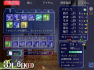 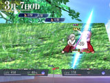 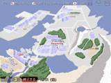
【おすすめできる人・できない人】
◆まず、以下にたくさん合てはまる人には、あまりおすすめできません。ご了承下さい！
× 一周で全てを遊び尽くせるゲームじゃないとイヤだ！
× 失敗しようが成功しようが、状況がどんどん進んでいくゲームは嫌い！
× イベント一枚絵が少ないゲームなんて遊べない！ と思う人
× 濃い恋愛シミュレーションものを期待している人
（※このゲームは、そういう部分はややあっさりめです）
× 現代ものなのにトカゲ頭やイヌ頭の人が出てくるなんてイヤだー！ という人
× 主人公には性格が決まってないとダメだ！ 無口なのは許せん！ と思う人
× シルフェイド幻想譚が肌に合わなかった
× シルフェイド見聞録も肌に合わなかった
◆一方、以下の項目にたくさん当てはまる人には、特にお勧めできるゲームです！
○ 育成シミュレーションが好き （未経験でもまったく問題ありません）
○ 何もしなくても、世界の状況が刻々と進んでいくゲームが好き
○ トカゲ頭とかイヌ頭の人が出てくるゲームを求めている
○ 「主人公はあなた自身」というゲームが好き
○ 何周でも遊べるゲームが好き
○ 一周あたりのプレイ時間は、５時間くらいがちょうどいい
○ キャラクターがたくさん出てくるゲームが好き
○ 現代っぽい世界観は嫌いじゃない
○ シルフェイドシリーズのキャラクターが出ると聞いて「おっ」と思った
○ スキルの組み合わせにこだわったり、戦術要素の強いバトルが好き
○ 未知のイベントがたくさん詰まってるゲームが好き
○ ゲームに足りないと感じた要素や妄想を、自分で作ってみたいと思ったことがある
○ みんなで作ったデータを使って、メインシナリオにないイベントを増やしたり、
ゲームバランスを崩壊させたり難しくしたりできると聞いて「面白そう！」と思った
○ ぶっちゃけシルフェイド幻想譚が好き（＝ このサイトにあるフリーゲームＲＰＧ）
【物語】
一年後に起きる『災い』。それを防ぐため、意識の海から呼び出された「あなた」は
サラという人物によってシルフェイド島へ送り込まれます。
シルフェイド学院で過ごす、一年間の物語――。
「あなた」はそこで何を見て、誰と出会い、そして何を想うのでしょうか。
【三つのクラス 異なるストーリー】
「あなた」が所属した「クラス」に応じて、出会う人々、災い、物語までもが大きく変化します。
シルフェイド学院物語では、以下の異なるシナリオが繰り広げられます。
・「武術運動部」編
戦い、そして、自身の強化によって災いに備えるシナリオ。
純粋に戦闘能力を上げればいいのでシンプル、初心者向け。
・「公安委員会」編
シルフェイド島で起きる事件を解決し、災いをひも解くシナリオ。
自由行動がカギとなるが、合間合間にうまく育成して自身の強化を図る必要もある。
・「地歴探究部」編
シルフェイド島に眠る「いにしえの遺産」を探り、島の歴史と謎を追う。
戦闘力、交流、自由行動、どれも問われる、難度の高いシナリオ。
【本格的なユーザ参加型機能、搭載！】
シルエットノートで二次創作機能が好評だったことを受け、
グラフィックや登場キャラクター、ゲーム内容までもを
新たに追加できる「ユーザデータ導入機能」を搭載！
プレイヤーさんの手で、「イベント」「キャラクター」「アイテム」「トーテム」
「新しいクラス」 「初期選択できる住居」 「バトルグラフィックの差し替え」など、
ほとんどの要素を新たに追加 / または差し替えすることができます。
また、公式に認定された優秀なデータは、
ゲーム内から直接ダウンロードすることが可能に！
ゲームをやり込み終わった後も、バランス調整パッチを作ってみたり、
新キャラを追加してみたり、キャラをより深く掘り下げたイベントを作ってみたりと、
遊びの幅は無限に広がります！
さらには、ゼロからデータを作成することで、シルフェイド学院物語とは全く異なる
新たな世界を作ることもできます！ 時間と共に、遊びの幅は無限に広がります。
|
シルフェイド学院物語は、2007年4月のエイプリルフール企画が原案です。
開発は、2008年の1～2月頃から行っております。
【トーテム】
 主人公をサポートしてくれる意識体 主人公をサポートしてくれる意識体 |
| トーテムの姿 |
解説 |
|
【ファング】 オオカミのトーテム
戦闘能力を大幅に向上させてくれるトーテムです。
しかし、それ以外のことには向いていません。
性格は武人風です、細かいことは気にしませんが、
ときにそれが不利に働くことがあるかもしれません。
戦闘中の行動回数 ３回
日常の自由行動回数 ２回
戦闘中のLIFEが１．２倍 |
|
【アウル】 白フクロウのトーテム
知力と素早さを向上させてくれるトーテムです。
戦闘もそれなりに可能で、何でもこなせますが、
やや決定力に欠けるところがあります。性格は
優しく、女性的です。人間にあこがれています。
戦闘中の行動回数 ２回
日常の自由行動回数 ３回
戦闘中の命中・回避率 ＋25％ |
|
【ラクーン】 アライグマ（？）のトーテム
かわいさ溢れる、自称アライグマのトーテムです。
人間関係や相手の性格を見抜く能力に優れ、
魅力の高さも相まって、他のキャラと仲良くなるのに
非常に向いています。でも戦闘は非常に苦手です。
戦闘中の行動回数 ２回
日常の自由行動回数 ４回
店やアイテム交換時、「交渉」することができる |
【 登場人物 】
シルフェイド島で出会う個性豊かな人々 |
| キャラクター外見 |
説明 |
| 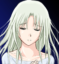 |
【サラ】 並列世界を視(み)ることができる少女
あなたをシルフェイド島へ導く、不思議な少女。彼女は、
多くの並列世界にいる「彼女」と意識を共有しています。
ですが、彼女らではどうしても回避できない『災い』の
存在に気付き、意識の海にいた「あなた」に、助けを
求めてきます。 |
|
【アルバート】 どのクラスでも出会う男子
どのクラスに入っても必ず同じクラスになる男子学院生。
片目が見えないのか、いつも眼帯を付けています。
性格は真面目でクールですが、ときどき変に考えすぎたり
常識外れな行動を取ってしまうことがあります。
どこで覚えたのか、銃の扱いに慣れています。 |
|
【ウリユ】 盲目の少女
シルフェイド学院 中等部の三年生です。
７年前に視力を完全に失ってしまいましたが、それでも
他の学院生とできるかぎり同じように生活しています。
何やら不思議な力を持っているそうです。 |
|
【ユーミス】 へんぴな場所にある雑貨店の主人
雑貨店の主人。娘であるウリユのために雑貨店を
始めたものの、店がへんぴな場所にあるのに加え、
商才に優れているわけでもないため、苦労しています。
ユーミス雑貨店は、最初に選択できる住居の一つです。 |
|
【モモセ】 オタクな同級生 （原案：よし 様）
通称「ピンクドリル」の、元気な同級生です。
アニメやマンガなどに造詣が深いそうです。
実は常にコスプレしているというウワサがあります。
同人誌というアイテムを持っています。
|
|
【タツゴロウ】 おコメが趣味
日本のニイガタからやってきた竜人の同級生。
素朴な性格です。学院寮に住めば、一緒に
生活することになるでしょう。
いつもお米を持ってるので、交換できるでしょう。 |
|
【イシュテナ】 ホームクラスの担任
主人公が入るホームクラス、１－６組の担任です。
数学を教えています。
行事や、毎月一度のホームクラスで
先生の話を聞くことができるでしょう。 |
|
【リクレール】 意識の海に住まう者
自称、トーテムの産みの親。
S.EXPと引き替えに、トーテムを介して
パラメータアップをしたり、戦闘の行動回数アップや
その他、様々な能力を授けてくれます。
|
|
【シーナ】 病院に住まう少女
何かの病気で長期入院している少女です。
ある条件を満たせば、出会うことができるでしょう。
病院には、同年代の人が近くにいないので、
あなたに興味を持っています。本が好きなようです。 |
| キャラクター外見 |
説明 |
|
【メアリー】 武術運動部のマネージャー
あなたと同時に、武術運動部にマネージャーとして
加入する女子。かなりの男性不信です。しかし、
あなたが女性なら、すぐに仲良くなれるかもしれません。
武術運動部の教師、エージスは彼女の父親です。 |
|
【エージス】 武術運動部の教師
武術運動部６組にいる二人の教師のうちの一人。
素質ある人はしっかり指導しますが、
そうでない人にはあまり興味がありません。
エージスに就いて指導を受けると、
攻撃的な技を、比較的、多く習得できます。 |
|
【ジュド】 武術運動部の教師の一人
武術運動部６組にいる二人の教師のうちの一人。
エージスと違い、分けへだてなく全員に均等の
指導を行っていますが、特別、何かが伸びることも
ないとも言えます。
ジュドに就いて指導を受けると、
防御的・補助的な技を、比較的、多く習得できます。 |
| キャラクター外見 |
説明 |
|
【狐狩ヨウコ】 公安委員会の担任
公安委員会７課を束ねる刑事。
射撃を得意としており、公安の訓練によく参加すれば
射撃技を教えてもらうことができます。
ただし、戦闘では全力で戦いすぎて、すぐ息切れします。
|
|
【ガゼル】 放棄地区出身の武闘派
公安委員会にあなたと一緒に入部する一人です。
ぶっきらぼうですが、放棄地区の未来を考えて
行動しています。
戦闘能力が高めで、放棄地区の情報収集などに
能力を発揮するでしょう。
|
|
【セト】 犬並みの嗅覚
公安委員会にあなたと一緒に入部する一人です。
正義感は強いのですが、代わりに融通がききません。
犬並みに鼻がきくため、事件解決においても、
大きな手助けとなるでしょう。
|
|
【シズナ】 心を読める能力者
主人公が男性の場合に、ある条件を満たせば、
公安委員会に所属する一人です。
理力(フォース)の力を持っています。
事件解決においては、情報の真偽を探るのに
非常に役に立つでしょう。
主人公が女性の場合は、代わりに弟のシンが所属します。 |
| キャラクター外見 |
説明 |
|
【バルト】 地歴探究部の担任
ほとんど生徒が来ない地歴探究部の担任です。
狼のネオ・ジーンで、シルフェイド島の隆起を
最初に予見した考古学者でもあります。 |
|
【アーサ】 キャンプ好きの学院生
いつもキャンプをしている、
冒険に憧れている学院生です。
歴史には興味がないと言いますが、
冒険の機会をほのめかせば、
仲間になるかもしれません。 |
|
【セタ】 放棄地区の子供を救う竜人
学院生ですが、あえて放棄地区に住み、
竜人の子供達を守っています。
竜人でも働ける場所を探しています。 |
|
【スケイル】 幻想の世界からやってきた者
別の世界からやってきた女性です。
ある特殊な条件を満たすことで、地歴探究部に
加入することになるでしょう。
非常に優秀な理力(フォース)能力者です。 |
お世話になっている方々の作品から参戦させていただいたキャラクター
| キャラクター外見 |
説明 |
|
【フォルテ】 ダンジョンシーカーより （原作：すう 様）
いつもお腹をすかせている、筋力がずば抜けた学院生。
武術運動部で一緒になります。
LIFEはそこそこですが、どこかで修行を積んだのか
攻撃力はかなり高く、身近な訓練相手の中では
大きな壁となるでしょう。 |
|
【アース】 アースシリーズより （原作：タクミ 様）
４年も高等部１年をやっている二十歳の学院生。
あなたと同じ高等部１年であるため、
彼は先輩ならぬ「同輩」と呼ばれてしまっています。
しかし戦闘能力は非常に高く、一筋縄では勝てません。 |
【 ゲームシステム 】
どんなゲーム？ |
| 画面 |
説明 |
| 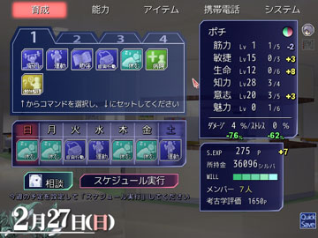 |
【育成メイン画面】
ゲームは、一週間単位で進行します。
この画面で、一週間分の
育成スケジュールを設定します。
その一週間の間に、
・突発イベントが発生したり……。
・「自由行動」によって、調査をしたり
買い物をしたり、特定のキャラに
会いに行ったりすることができます。
また、一週間分のパラメータ変動分も、
ステータス欄に表示されます。
（－２ ＋３ や、－７６％の部分）
【相談】 トーテムに話して、その時点の
アドバイスを聞くことができます。 |
|
| 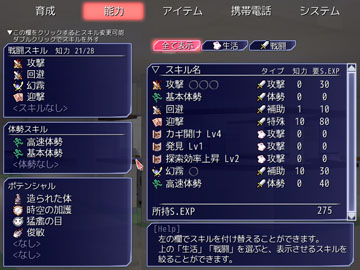 |
【能力画面】
スキルの付け替え・習得・強化が
可能です。
＜戦闘スキル＞
戦闘中にコマンド選択で発動できる
スキルや、自動スキルを装備できます。
全スキル分を合わせた必要知力が、
知力に満たない場合は装備できません。
＜体勢スキル＞
戦闘中、コマンドを消費せずに
チェンジできる「体勢」スキルを
ここにセットします。一番上の体勢が、
戦闘開始時に選択されます。
＜ポテンシャル＞
「あなた」が持つ特殊能力です。
育成や戦闘、交渉に影響します。 |
強化メニュー .
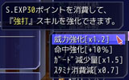 |
←【強化メニュー】
画面右のスキルをダブルクリックすると
スキルを強化することができます。
強化できる内容・強化可能回数は、
スキルによって異なります。 |
|
| 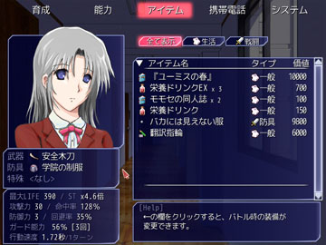 |
【アイテム画面】
装備中の武器・防具を変更したり、
アイテムを使用することができます。
防具や特殊装備によっては、
服装のグラフィックも変化します。
（※画面は「学院の制服」を装備中） |
|
| 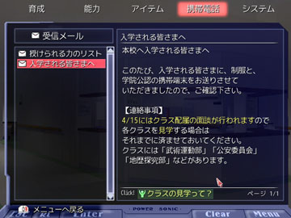 |
【携帯電話 画面】
受信したメールや、入手した情報、
連絡先などを確認することができます。
一部のキャラに対して、電話することも
可能になります。 |
| 画面 |
説明 |
| 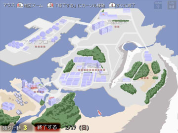 |
【自由行動】
育成スケジュールに「自由行動」を入れると、
街を自由に探索することができます。
買い物したり、誰かに会いに行ったり、
公安委員会で捜査をしたりするためには、
この「自由行動」を行う必要があります。
← これは自由行動開始時の画面です。
この画面から５つのどれかの地区を
選択すると、ズームして次画面に行きます。
※■■■の数は、イベントが存在している
地点の数です。
|
| 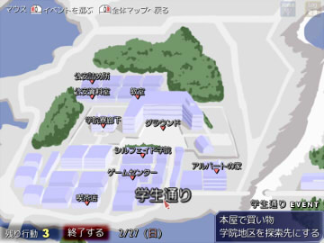 |
【ズーム後の画面】
調べられる地点が表示されます。
各地点で発生するイベントは、
カーソルを合わせると右下に表示されます。
その中から、一つを選ぶと、
自由行動回数を１回消費し、
イベントが発生します。
※残り行動回数は左下に表示されています。 |
| 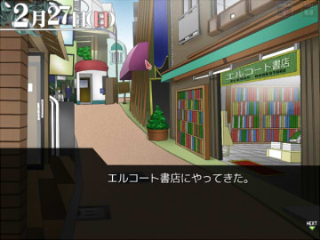 |
【本屋で買い物】 を選択した場合
＜ 本屋で買い物をすることができます。 |
| 画面 |
説明 |
| 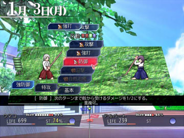 |
【戦闘システム】
行動が回ってくると、
使用可能な「コマンド」と、
「体勢」が表示されます。
味方は左側のキャラクターです。
味方の右に５つ出ているのがコマンド、
下に３つ出ているのが体勢です。
|
| 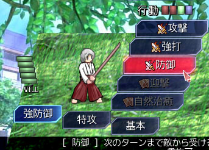 |
← 「行動」の残り分だけ、
コマンドを入力できます。
（例：攻撃・攻撃・強打・防御、など）
※「体勢」を切り換えることにより、
防御を犠牲に攻撃力がアップしたり、
行動速度が上がったりします。
「体勢」を切り換えても、
コマンドは消費しません。
|
↓残りガード回数とガード％
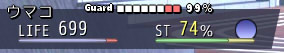
↑LIFE スタミナ(％)↑ ↑元気度 |
【ステータスの見方】
・残りガード回数・ガード％ …
敵の攻撃を受けたとき、この回数だけ
％分のダメージを抑えることができます。
・LIFE … なくなると戦闘不能です。
・スタミナ…コマンドを選ぶたびに減少します。
マイナスになると、次に行動が
回ってくるのが遅くなってしまいます。
・元気度 … スタミナの回復量に影響します。
長く戦っていると減っていき、
スタミナの回復が少なくなります。
減少 <--------------> 最大 |
| 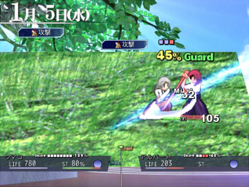 |
【ターゲット選択】
コマンドを複数選んで攻撃先をクリックすると、
選んだコマンド分だけ、
アニメーションで連続攻撃します。
攻撃を与えるたびに相手のガード回数が減り、
ダメージがどんどん大きくなります。
ガード回数を0回にすれば、相手はまったく
ダメージを軽減できなくなるため、
大きなダメージを与えられるでしょう。
※ちなみに、ガード回数はターンが来ると
「基本体勢」時の半分だけ回復します。 |
| 画面 |
説明 |
| 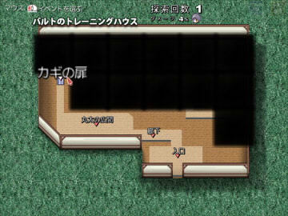 |
【ダンジョン】
施設や遺跡の探索時は、探索モードに
なります。
自由行動と同じく、ポイントをクリックすると、
その地点のイベントを発生させることが
できます。
未確認の地点は黒く塗り潰されており、
移動するたびに、少しずつ構造が
明らかになっていきます。
ダンジョンによっては、探索回数が
制限されている場合があります。
どこかのポイントをクリックするたびに、
一回ずつ減っていきます。
なくなると、撤退です。
|
【 体験版ダウンロード 】
体験版ゲームデータのダウンロード |
【 Q&A 】
困ったときは |
A.もしグラフィックの問題でしたら、ゲーム開始後の
「オプション」→ 「スムーズさ」を「カクカク」にする
（または「F５キー」を何度か押す）
ことで、ある程度快適に遊べるようになると思います。
もともと処理の量が多いので、その分で重くなっている場合は
どうしても回避できないと思います。
体験版で、事前にまともなプレイが可能かチェックしてください。 |
A.週間メニューになったら「システム」の右下にある「ゲーム再起動」ボタンを押してください。
これを使うと、一度ゲームを完全終了して、すぐ同じ状態からロードするので、
長時間プレイ時に重くなる症状が一時的に解消されると思います。 |
A. 開発者のOSもWindows7 64bitなのですが、現象が再現できていません。
画面解像度をゲーム側で変更する行為が、セキュリティ的に問題と判断されて
終了してします可能性があるかもしれません。切り替え時の強制終了が
激しいようでしたら、ウィンドウモードでF4キーを押して、疑似全画面での
プレイを推奨します。
（ただしその場合、マウスカーソルの自動移動先が少しずれることがあるので、
その点はご了承下さい。この件については後述しています） |
A. そのケースでは、USBコントローラを外すと、正常に動作する可能性があります。
※ Windows環境でXBOX360コントローラーを非公式ドライバで使用していると、
キーボードの一部キーが押しっぱなしになる＝「既読ログが出続けてしまう」という
ご報告をいただきました。
|
A. 武術運動部や公安委員会の訓練戦闘では、
自動的に武器が「安全木刀」や「拳銃『モスキート』」に
変更されてしまうため、祈りの短剣の集中効果は発動しません。 |
A.イベントの起動条件は、育成前のパラメータでチェックしてるので、
それで仕様です。テクニックとして、土曜日にダメージが
増えやすいことをして、日曜に回復することができます。 |
A.古いDXライブラリに残っている不具合のようで、元の解像度である
640x480以上の位置にはマウスカーソルが移動できないようです。
（そのため、たとえば疑似全画面でウィンドウを1280x960にすると、
最大で640x480＝つまり画面真ん中までしか移動しません） |
A.最新版が正しく導入されていれば、Escを押しっぱなしにしていると
戦闘をギブアップ（負けたことにして終了）できます。
戦闘が長引いたとき、画面下にそのヘルプが自動表示されるようにしました。 |
A.消えません、WOLF RPGエディターに残っていたバグのようです。
ただ後からのEXE差し替えは困難なので、シルフェイド学院物語においては、
今のところ仕様とさせていただいております。 |
ということで、ユーザデータの見本データをアップさせていただきました。
よろしければご参照下さい。
●全てのキャラ・アイテム・トーテム・家データなど、データ類全般
●強制イベント・自由行動イベント・呼び出しイベント・ダンジョンの中から
特別な処理を含んだものや例になりそうなものをピックアップ
【ダウンロード（Zip形式） 約400KB】 2014/06/05更新
・2011/07/21 開始イベントを修正
（難易度調整を実装＋プレゼントボックスを公式とユーザ用に分離）
|
ユーザデータを作るとき、役に立つ隠しコマンドがあります。
・ゲームを起動してすぐに「２」キーを押しっぱなしにする。
→ 顔グラフィック合成画面が起動します。ここで設定して、保存したテキストは、
コピー＆ペーストして、キャラの外見の設定として使うことができます。
・ゲームプレイ中に「K」キーを押す。
→ フラグ・変数リスト一覧を表示。それまでにプレイしたフラグや変数の中身を
テキスト出力します。「シルフェイド学院物語」フォルダに
[データ]プレイ中処理フラグ一覧.txt というファイルが作られます。
・ゲームプレイ中に「L」キーを押す。
→ そのプレイで発生した「発生済みイベント一覧」をテキスト出力します。
「シルフェイド学院物語」フォルダに、
[データ]プレイ中発生済みイベント一覧.txt というファイルが作られます。 |
・
銃器の設定では、「連続攻撃時命中率低下[%]」に手動の値は入力できず、
自動的に 「装弾数/5」％ として扱われます。
これは、装弾数と連続攻撃時命中低下で、同じ変数の枠を使っていたという
修正不能な問題が見つかったためです（つまり別々の値を入れることができない）。
そのため、連続攻撃時命中率低下[%]に入れた値は、装弾数として扱われてしまいます。
（そして実際の連続攻撃時命中率低下[%]は、その値の1/5になるわけです） |
イベント起動条件では、所持アイテム数の判定を行うことができません。
【対策の例】
１．イベント内の条件分岐なら、所持アイテム数で分岐させることができるため、
自由行動Ｅｖなら、いつでも行ける代わりに、所持アイテムがなければ、
行っても「しかし今は何もなかった……」という風に表示して、
アイテムを持っているときだけイベントが実行される、という風にする。
２．毎週日曜に所持アイテム数を${変数:木刀持ってる数}といった変数に入れて、
実際のイベント起動条件を変数比較で設定する。 |
ちなみに、「日」だけで起動条件を判定したい場合は、
!変数比較 , ${システム:日} , 5 , と同じ
という条件を設定してください。 |
Windows側の画面の拡大設定が原因のようです。対応は以下の通りです。
【WindowXP/Vistaの場合】
[画面のプロパティ]→[タブ：設定]→[詳細設定]→[タブ：全般]にある
「DPI設定」を通常のサイズに設定することで正常に表示されるそうです。
【Windows7の場合】
コントロールパネル → ディスプレイ → 文字サイズを「小（100％）」に設定する（125％だと端が切れるそうです） |
「服装グラフィック_アクセサリ」は機能しません。付けたまま、消すのを忘れていた機能です。
「服装グラフィック」で代替できますので、顔グラフィックの服装設定ｊ時は、こちらのコマンドをご利用下さい。 |
ショートストーリー内で「
!基本情報変更 , 人物
キャラ名,テスト
～～～
といった入力を行うことで、新しく作ったキャラをショートストーリー内に
登場させることができるようです。しかし、そうしてキャラを追加した場合、
＠テスト
～～～～～
で喋らせようとするとエラーが出るため、以下の方法で会話させてください。
!文字列操作 , ${文字列:TMP} , = , テスト
＠${文字列:TMP}
～～～～～
もともと新キャラは登場させられなかったのですが、この裏技によって
新しいキャラを使うことができるようになりました。情報ありがとうございます。
この仕様はそのまま残しておきますので、イベント中で新キャラを
増やしたい場合に、テクニックとしてご利用下さい。
|
お互いのアイテムの片方が「まだ設定されていない」状態でアイテムを
減らそうとするイベントを作ったため、エラーが出たのだと思います。
対策としては、アイテムのテキストファイルを以下のように、
----------------------------
アイテム名,アイテムA
アイテム名,アイテムB
アイテム名,アイテムA
使用名/イベント,変換！
!アイテム増減 , アイテムA , 1
!アイテム増減 , アイテムB , 1
EVENT_END
----------------------------
といった感じで、ファイルの最初に「両方のアイテム名だけ」指定してみてください。
|
これに関しては、「再生」スキルの前に「次元断裂」を移動させてくだされば
解決すると思います。
【修正後の例】
→ 戦闘スキル欄,80,時空断裂,再生,雨癒,剛力,行動回数４
「『支援』行動を行わず、かつ強い攻撃を使用するスタミナが足りない場合」
は、通常、敵に対して
「一個目に指定されているスキル」（おっしゃったケースでは「再生」）
を使用するようになっています。普通は攻撃系スキルを入れてください。
|
起動させたくない公式イベントの「イベント名」を確認して、どこかのイベントで
!変数操作 , ${変数:EV/<イベント名>} , = , 1
というコマンドを実行してください。すると、対象のイベントが起きなくなります。
【例】
!変数操作 , ${変数:EV停止=共通/入学式} , = , 1
をどこかのイベントで実行すると、入学式のイベントが起きなくなります。
代わりに、あなたの作った入学式イベントに差し替えるなんてことが可能です。
ちなみに、Event_Load内のイベントに関しては、公式と同名のファイル名で
作ることで、上書きすることができます。
（他の方のユーザデータにも同名のファイルがあった場合は、
最後に読み込まれたものが優先されます） |
「シーン服装変更」後、同じキャラを同じ表情で２回連続で表示した後、
またシーン服装変更すると、そのキャラに限って、シーン服装変更が
反映されなくなります。
しかし、これによりシーン服装変更が効かなくなった後も、
単体キャラ用の「服装変更」コマンドであれば変更は可能です。
【問題の現象例】
!シーン服装変更,胴着
＠主人公
テスト台詞 （←「胴着」で表示される）
＠主人公
テスト台詞２ （←「胴着」で表示される）
!シーン服装変更,裸
＠主人公
テスト台詞 （←シーン服装は「裸」だが「胴着」で表示されてしまう）
公式イベントも（そしてユーザデータも）この仕様に合わせて調整されており、
今から修正を行うと多くのデータが想定通り動作しなくなる可能性があるため、
このバグは、仕様として残しています。ご了承下さい。
|
【 おまけ 】
気になる裏話コーナー |
テストプレイ中に起きたショッキングな（？）事件をマンガ化してくださいました。
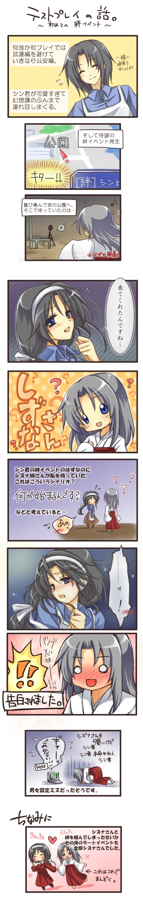
開発に協力してくださった皆さま / 素材提供者の方々
□育成画像作成
・透子様 [wisterio*]
・氷野様 [MOONCALF+ｔ]
□背景素材
・タクミ様 [タクミドットネット]
・株式会社ウエストサイド
・ぐったりにゃんこ様 [背景写真補完の会より]
□戦闘エフェクト作成・一部サウンドエフェクト
・Panop様[城壁]
□アイコン素材素材
・もやしほわいと様 [Whitecat]
・春子様 [Escape]
□音声素材
・株式会社データクラフト
・株式会社ナッシュスタジオ
・Notzan ACT
・MEDIAPLANET株式会社
□キャラクター原作
・アース（アースシリーズより）
原作者：タクミ様[タクミドットネット]
・フォルテ（Dungeon Seeker より）
原作者：すう様[すうらぼ]
□キャラクター原案
・モモセ フジヨシ（シルフェイド学院物語 FAEより）
原案：よし様[WhitePuzzle]
|